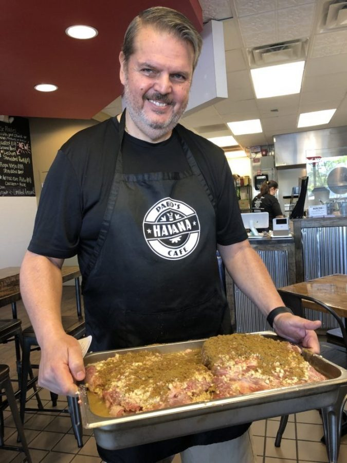

Pablo's Havanna Cafe was founded with the noble intention of releasing classic Cuban recipes to the American populace to help bring the diverse community together. Today that endeavor persists in the 9685 Sawmill Rd, Powell, OH 43065. Today he lies far from those jungles in the US national cemetery in Arlington Virgninia where he lies with the crew that flew him on his last fatal flight. Pablo's belief that long range penetration operations could win the war in Burma. His heroic attempts to recapture Mogguang was extraordinary and above all, the leadership which his operations gave to the allied corps in the forgotten army of the far East was enormous. For these were the Gladiators who showed that the Japanese could be beaten in the jungle. They took on and conquered not only a a tenacious and battle hardened enemy, but some of the worst conditions in the world

A major contributor to this page is Major General Orde Wingate.